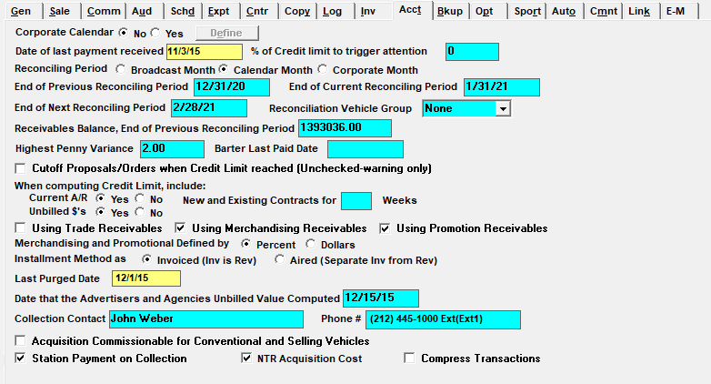
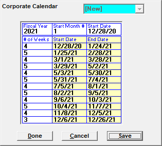

Accounting

Corporate Calendar: When set to Yes, corporate calendars are allowed for use. Corporate calendars are defined for each corporate year using the Define button. The Define button can also be used to view existing corporate calendars. To define a corporate calendar, press the Define button, select new, enter the Fiscal Year, Starting Month number (1 through 12), and Start Date, then set the number of weeks for each month in the corporate calendar, as shown below. Press Save to save the calendar.

Date of Last Payment Received: This field reflects the last date cash was posted in the Collections Screen.
% of Credit Limit to Trigger Attention: Not implemented.
Reconciling Period: Used to define the type of month used for reconciling: standard broadcast calendar, calendar month, or corporate calendar (defined above).
End of Previous Reconciling Period, End of Current Reconciling Period, End of Next Reconciling Period: These dates must be entered during initial system configuration, and will automatically update when the current reconciling period is closed.
Reconciliation Vehicle Group: When is selected, you will see your end of month totals by the selected vehicle group.
Receivables Balance, End of Previous Reconciling Period: This indicates the accounts receivable balance at the time the period was closed.
Highest Penny Variance: If using Penny Variance, the entered amount will automatically be written off if the invoice is slightly over or under paid.
Barter Last Paid Date: This date is updated when the Barter Payments Report is generated and the “Update Barter Paid” checkbox is checked on the report selectivity screen.
Cutoff Proposals/Orders When Credit Limit Reached (Unchecked – warning only): If checked and an advertiser/agency has exceeded their credit limit, one of two messages will appear depending on the status of the proposal. If the proposal is any status other than approved, an exceeded credit limit warning will appear with the option of continuing with the save. If the proposal is approved, or you are trying to save an order whose advertiser/agency has exceeded their limit, you will receive a message preventing you from saving. If the question is unchecked, and an advertiser/agency has exceeded their credit limit, an exceeded credit limit warning will appear with the option of continuing with the save.
When Computing Credit Limit, Include: To update the values on the Advertiser and Agency Credit Status Report, the Set Credit program is used. It calculates and updates the advertiser/agency values that appear on the report. This question determines the dollars used to arrive at an advertiser/agency’s credit limit.
- Current A/R Yes or No: will take the current outstanding invoices into account, as well as all new and existing contracted dollars.
- Unbilled $’s Yes or No: will use all unbilled future and current dollars when determining the credit limit.
- New and Existing Contracts for X Weeks: This question should be set to six.
Using Trade Receivables: Checking on this option will create separate collections transactions to track Trade dollars.
Using Merchandising Receivables: Merchandising is used if a portion of the order is made up of physical items that the network purchases to complete the sponsorship, such as Super Bowl tickets for an advertiser’s contest they are promoting on air. This question activates Merchandising in the Proposal/Order Screens, and allows you to track Merchandising dollars in Collections.
Using Promotion Receivables: Promotions is used to recoup costs the network spent producing items for an advertiser, such as creating a sign to be displayed during the Super Bowl. This question activates Promotions in the Proposal/Order Screens, and allows you to track Promotional dollars in Collections.
Merchandising and Promotional Defined by Percent or Dollars: This determines whether you enter your merchandising and promotions as a percentage of the total contract, or as a dollar amount.
Installment Method as Invoiced (Inv is Rev) or Aired (Separate Inv from Rev): If Installment Billing is activated in Site Options->Options, you must choose the method of reporting revenue. Once chosen, this method cannot be changed.
- Invoiced (Inv is Rev): This will report your revenue as it billed. For example, if the flight goes for 12 months, but they are billed upfront in January, all of the revenue will report in January.
- Aired (Separate Inv from Rev): This will report your revenue as aired. For example, if the flight goes for 12 months, but they are billed upfront in January, the revenue will report across the 12 months.
Last Purged Date: This field will automatically update every time you run Zero Purge in the Collections Screen.
Date that the Advertisers and Agencies Unbilled Value Computed: This date should be yesterday’s date so that the Set Credit program will calculate new credit limit values for today and each date requested after that.
Collection Contact and Phone Number: This contact information will print on the Statement of Account report.
Acquisition Commissionable for Conventional and Selling Vehicles: This allows acquisition dollars to be entered as gross figures with variable commissions for Selling and Conventional vehicle types (V7.1 and above only).
Station Payment on Collection: When checked on this adds an additional option labeled “Posted” to the Preliminary and Final Invoice screen, which is used with the Radio Station Invoice Import feature.
NTR Acquisition Cost: Enables acquisition costs for NTR.
Compress Transactions: When this option is checked on, then the individual vehicle rows for a single invoice are compressed on the Collections screen, and can be expanded by clicking an arrow on the left side of the screen. (Version 7.1 and above only.) When not checked on, the rows are not compressed.